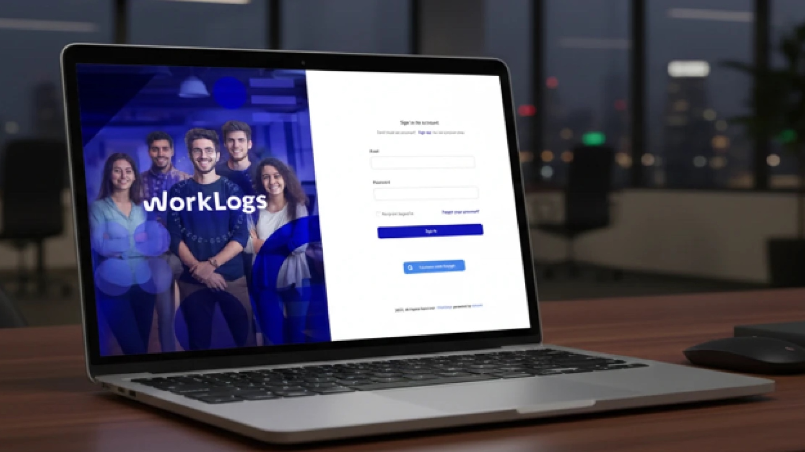

Herramienta de seguimiento de tiempo y trabajo para equipos de desarrollo ágil.
Visitar sitioLos equipos de desarrollo en Kommit necesitaban una herramienta propia para registrar tiempo, asociar trabajo a tickets y generar reportes. Las soluciones existentes eran costosas o demasiado complejas.
Diseñé Worklogs como una herramienta que se integra al flujo de trabajo real de los desarrolladores — minimalista en UI, poderosa en datos.
El material de diseño de este proyecto está reservado por políticas de seguridad de la información. Su publicación está restringida bajo los estándares ISO/IEC 27001:2022.